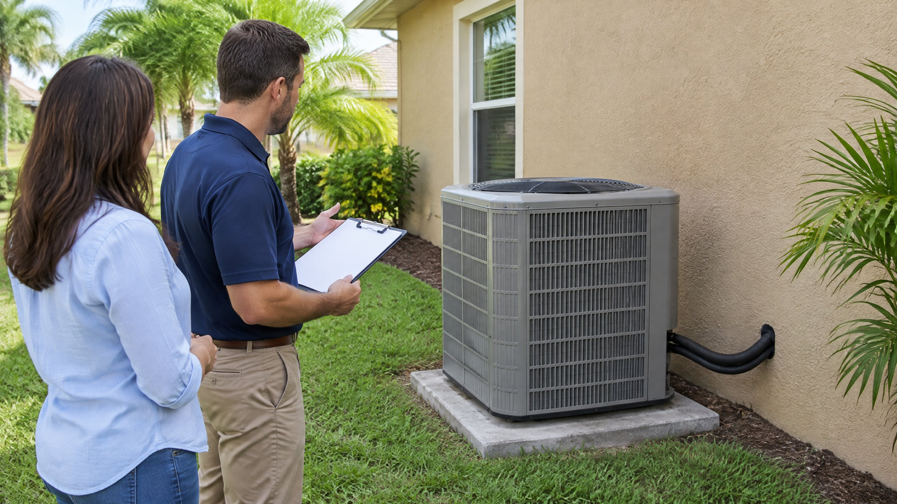

If one Tampa AC replacement proposal includes new refrigerant lines and another says “reuse existing,” the two quotes may describe different work. Neither phrase explains whether the tubing suits the proposed equipment. Ask what the installer checked, which installation instructions apply, and what happens if the existing lines do not qualify.
What Is the Refrigerant Line Set?
In a typical residential split system, the line set is the refrigerant tubing connecting the outdoor unit with the indoor coil. It is separate from the ducts that move air through the home and the condensate drain that carries away collected moisture. Insulation around a refrigerant tube is another separate part of the installation.
Replacing the outdoor cabinet does not automatically replace tubing hidden in a wall, ceiling or other part of the route. A proposal should identify whether the existing tubing stays, is replaced entirely, or has a specifically described section changed. If the equipment scope is also unclear, read our separate answer about replacing only the outdoor AC unit.
When Might Existing Lines Be Considered?
The starting point is the current installation manual for the exact proposed equipment—not an assumption that copper tubing can always be reused. Relevant checks include the required line sizes, route length and vertical separation, condition, contamination history and prior refrigerant. The applicable manufacturer instructions determine whether that particular reuse proposal is acceptable.
For example, the July 2026 Bosch IDS Light Series R-454B manual discusses existing lines, but requires correct sizing and freedom from leaks, acid, oil and old refrigerant. It also says lines used with another refrigerant, such as R-410A, should be replaced. That is a product-specific instruction, not a statement that every manufacturer's equipment has identical requirements.
This distinction matters when a general online FAQ or an older installation says lines can be cleaned and kept. Ask the contractor to show the current instructions for your proposed model and explain any apparent conflict. A general “we always flush them” answer does not resolve a model-specific replacement requirement.
Why Might New Refrigerant Lines Be Recommended?
PNNL's pre-retrofit guidance favors replacing the line set to avoid contamination from incompatible fluids and notes that contaminated lines may need replacement. That guidance supports evaluating the refrigerant circuit as part of the replacement, not automatically keeping every old component. Its general preference is not a blanket claim that all existing tubing must be replaced by law.
| Finding or proposal | Question to ask the installer |
|---|---|
| Different refrigerant in the new system | What does this model's current manual require for tubing previously used with the old refrigerant? |
| Leak, damage or contamination history | What was found, and how does it affect whether the existing lines can remain? |
| Different equipment or a changed route | Do the proposed line sizes, length and vertical separation meet the equipment requirements? |
| Lines concealed in the home | What access, new routing and restoration are included if replacement is required? |
A leaking line set is not the same diagnosis as a leaking indoor or outdoor coil. Likewise, worn outer insulation is not by itself proof that the tubing underneath leaks. Ask for the actual finding rather than treating every refrigerant-related problem as the same replacement job. Our recharge-versus-leak-repair explanation covers those different service tasks.
What Should a Line-Set Quote Spell Out?
For a Tampa or North Tampa home, the route between the indoor coil and outdoor unit can affect access and the work included. A short accessible run and a concealed route are not interchangeable scopes. Ask for a written description before comparing totals:
- Whether the tubing is new or retained, and exactly which sections are included.
- The proposed equipment models and the installation requirements used to evaluate the lines.
- Who provides required insulation, supports, protection and treatment of wall penetrations.
- Whether access openings, abandoned tubing and any finish restoration are included or excluded.
- How an unexpected problem will be documented and authorized before additional work.
These are scope questions, not a universal price formula. An itemized explanation is more useful than assuming new lines always make a quote better or retained lines always make it cheaper. For the remaining equipment, paperwork and warranty questions, use our broader AC replacement quote checklist.
What Should Be Verified After Installation?
New tubing does not replace the need for professional startup checks. Retaining tubing does not remove those checks either. The applicable installation instructions govern preparation and testing. The Bosch example includes dedicated leak-check and evacuation sections; those are professional tasks, not homeowner procedures.
ENERGY STAR's quality-installation guidance also calls for verifying airflow against manufacturer specifications and testing and adjusting refrigerant charge. Ask which startup results will be recorded and what operating instructions you will receive. “It blows cold” is not a written explanation of the completed installation checks.
What Can You Prepare Without Working on the Lines?
Gather the existing equipment information, previous repair records and any known refrigerant-leak history. Share whether the tubing route has been moved or concealed during remodeling. Request a site assessment through our AC installation and replacement service before accepting an assumption about hidden piping.
Do not open the refrigerant circuit, connect gauges, cut tubing or attempt a flush. You do not need to perform the contractor's tests to make an informed decision. Your useful role is to ask for a model-specific reason, an explicit scope and a record of the completed work.
Frequently Asked Questions
Does every new AC require a new refrigerant line set?
Not automatically. Existing lines must qualify under the current instructions for the exact proposed equipment and their actual condition and history. Some model instructions call for replacement when the lines previously carried another refrigerant. Ask for the specific requirement rather than a universal reuse rule.
Can old R-410A lines always be flushed for a new R-454B system?
No. Do not assume flushing overrides the equipment instructions. The July 2026 Bosch IDS Light Series R-454B manual says lines used with another refrigerant, such as R-410A, should be replaced. The installer must follow the current requirements for the proposed model.
Does damaged pipe insulation mean the refrigerant tubing must be replaced?
Not by itself. Insulation condition and tubing condition are different questions. The installer should assess the tubing and required insulation separately rather than infer a refrigerant leak from worn outer insulation alone.
Should the quote include wall repairs if new lines are installed?
Ask the contractor to state this explicitly. A tubing replacement description does not by itself explain access openings, finish restoration, removal of old tubing or a new route. Get those inclusions and exclusions in writing before authorizing the work.
Sources
- PNNL Building America Solution Center: Pre-Retrofit Assessment of Existing HVAC Systems — replacement preference, contamination concerns and manufacturer-directed commissioning. Older cost and efficiency tables are not used here.
- Bosch IDS Light Series R-454B Installation and Operating Instructions, July 2026 (PDF) — page 19, section 6.4, existing-line requirements; sections 3.2, 6.3, 10 and 11. A model-specific example, not a universal rule.
- ENERGY STAR: HVAC Quality Installation — airflow and refrigerant-charge verification.
Editorial Source Review & Publisher
On The Way Heating & Air reviewed the cited sources for this homeowner explanation on October 29, 2026. It is general education, not a finding about your home's tubing or permission to perform refrigerant work. An on-site assessment and the proposed equipment's current installation instructions determine the appropriate scope.